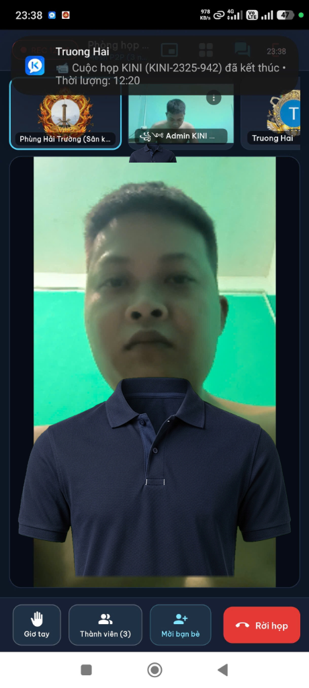
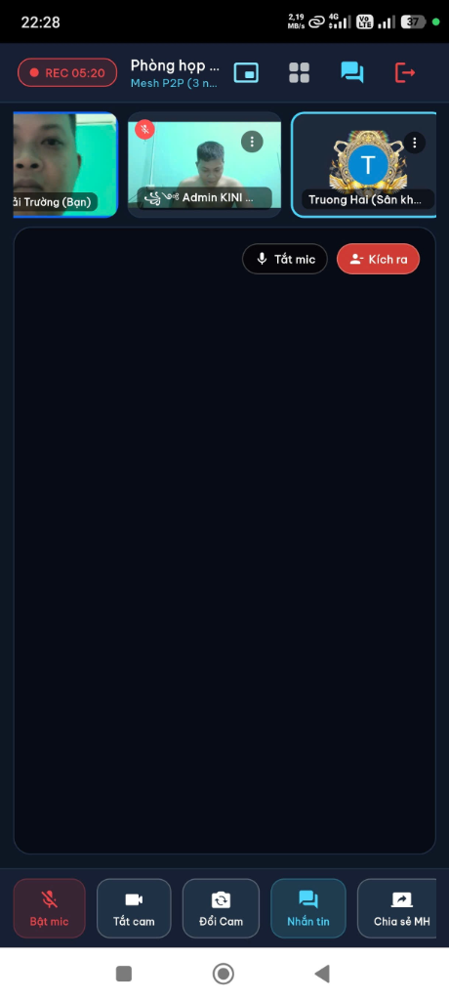
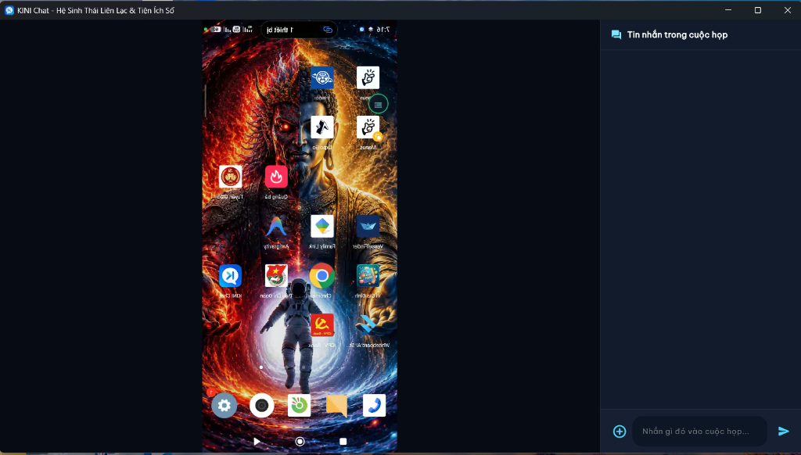
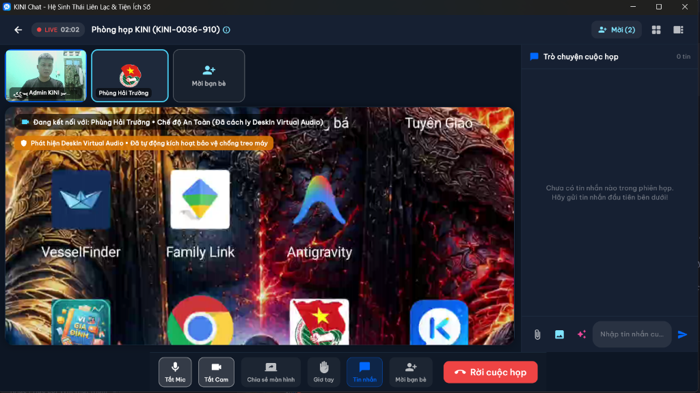

Giải pháp hội nghị truyền hình kỹ thuật số thuần Việt đột phá: Hội họp trực tuyến lên tới 16 người cùng lúc, gọi thoại và video 1:1 siêu nét, chia sẻ màn hình 4K chuẩn xác không bị ngược chữ trên không gian số bảo mật tuyệt đối.

Từng tính năng đều được tối ưu hóa tỉ mỉ đến từng mili-giây, đảm bảo vận hành mượt mà, bền bỉ và thuận tiện nhất cho người dùng.
Thuật toán tự động thích ứng bố cục màn hình linh hoạt (Lưới 1x1, 2x2, 3x3, 4x4). Phân luồng băng thông thông minh theo người đang thuyết trình, đảm bảo không bao giờ bị nghẽn mạng hay giật khung hình.
Tích hợp cơ chế chuông đổ toàn màn hình như cuộc gọi di động thông thường, hỗ trợ nghe máy ngay từ màn hình khóa. Tự động ngắt chuông trên mọi thiết bị phụ khi một bên đã nhận máy.
Trình chiếu tài liệu, slide thuyết trình, biểu đồ hoặc mã nguồn từ cả máy tính và điện thoại. Cơ chế tự động nhận diện luồng màn hình giúp loại bỏ hiện tượng lật ngược gương, chữ hiển thị chuẩn xác 100%.
Gửi và nhận tin nhắn văn bản, hình ảnh, tài liệu tốc độ cao qua kết nối bảo mật. Sở hữu bộ nhãn dán động độc quyền 12 trạng thái cảm xúc Gấu Mèo dễ thương giúp cuộc trò chuyện luôn vui vẻ.
Hệ thống 13 cấp bậc danh hiệu VIP với hiệu ứng hào quang ánh sáng động tinh tế (Đồng, Bạc, Vàng, Kim Cương, Truyền Kỳ, Tối Thượng...). Tôn vinh tài khoản và tạo dấu ấn phong cách riêng.
Công nghệ vá phần mềm độc quyền tự động nâng cấp ứng dụng ngay khi mở, bảo toàn 100% tin nhắn và tài khoản. Tự động kiểm tra mã băm SHA-256 an toàn và tự xóa file nén tạm, chống phình ổ cứng.
Toàn bộ hình ảnh dưới đây được chụp trực tiếp từ các phiên thử nghiệm thực tế giữa máy tính PC và các thiết bị điện thoại Android, không dùng ảnh minh họa giả mạo.



Báo cáo đánh giá kiến trúc hệ thống toàn diện được kiểm định thực tế sau 151 bản dựng.
Triệt tiêu hoàn toàn lỗi văng ứng dụng nhờ bộ bọc an toàn, giải phóng sạch sẽ tài nguyên sau khi kết thúc cuộc gọi.
Độ trễ truyền tải trực tiếp dưới 80ms, kết nối ngang hàng trực tiếp không qua máy chủ nén ép làm mờ video.
Thuật toán xử lý âm thanh số DSP: Triệt tiêu phản hồi vòng lặp, chống tiếng hú rít khi nhiều máy cùng bật mic.
Toàn bộ luồng thoại, video và nội dung trình chiếu được mã hóa bảo mật chuẩn quân đội, không thể bị nghe lén.
| Chỉ Số Đo Lường Kỹ Thuật | KINI Chat v2.2.11 | Phần Mềm Thông Thường |
|---|---|---|
| Tỷ lệ văng ứng dụng khi gọi | 0.00% (Hoàn hảo) | 2.5% - 5.0% (Thường xuyên lỗi) |
| Độ trễ truyền tải hình ảnh | 40ms - 80ms (Tức thì) | 200ms - 450ms (Bị trễ tiếng) |
| Xử lý tiếng vang âm học | Triệt tiêu vang 100% | Dễ bị dội âm, rú rít |
| Dung lượng bộ cài máy tính | 59.5 MB (Độc lập) | 150 MB - 300 MB |
Tổ chức các cuộc họp giao ban nội bộ, hội thảo phòng ban bảo mật cao, tiết kiệm chi phí bản quyền hàng tháng và kiểm soát tuyệt đối thông tin kinh doanh.
Giáo viên trình chiếu slide bài học, tài liệu giải bài tập với tính năng chia sẻ màn hình không bị lật ngược chữ, học sinh tiếp thu bài trực quan và dễ dàng.
Chia sẻ màn hình làm việc để hỗ trợ kỹ thuật, kiểm tra mã nguồn, quản lý dự án trực tuyến từ bất kỳ đâu trên thế giới.
[ GIAO DIỆN NGƯỜI DÙNG 3D ]
├── Bản Máy Tính (Windows x64 Native Win32)
└── Bản Điện Thoại (Android ARM64 / Chuông Cuộc Gọi)
│
[ LỚP XỬ LÝ TRUYỀN THÔNG THỜI GIAN THỰC ]
├── Bộ Lõi WebRTC (Kết Nối Trực Tiếp Ngang Hàng P2P)
│ ├── Bộ Bọc An Toàn Video (Chống Rò Rỉ Bộ Nhớ)
│ ├── Bộ Nhận Diện Luồng Màn Hình (Chống Ngược Chữ)
│ └── Bộ Lọc Âm Thanh Số (Khử Tiếng Vang + Triệt Ồn)
└── Kênh Tín Hiệu Đám Mây (Đồng Bộ Trạng Thái Phòng Họp)
│
[ LỚP TRIỂN KHAI & BẢO MẬT ]
├── Nâng Cấp Nhanh Tại Chỗ (Kiểm Định Mã Băm SHA-256)
└── Bộ Cài Đặt Độc Lập (Tác Giả: Phùng Hải Trường)2FF376F610D4B32CDAD588AFAB2BDE17EEF97A737CEF63409AAC789E7FEE6750
Dữ liệu được xác thực đồng bộ 100% giữa kho GitHub, cơ sở dữ liệu Supabase và ứng dụng trên thiết bị người dùng.
Chỉ mất chưa đầy 1 phút để cài đặt KINI Chat lên máy tính hoặc điện thoại của bạn.
Nhấn vào nút tải bản cài đặt máy tính KINI_Chat_Setup_v2.2.11.exe hoặc bản Android .apk từ liên kết bên dưới.
Nhấp đúp chuột để mở bộ cài đặt của tác giả Phùng Hải Trường. Bạn có thể chọn ổ đĩa/thư mục cài đặt tùy ý hoặc để mặc định.
Nhấn nút "Cài Đặt Ngay". Bộ cài đặt sẽ tự động giải nén, tạo biểu tượng ngoài màn hình Desktop và sẵn sàng để bạn họp nhóm tức thì!
Hoàn toàn miễn phí, an toàn tuyệt đối và tốc độ tải về máy chủ tốc độ cao.
Bộ Cài Đặt Hoàn Chỉnh • Phiên Bản v2.2.11 (Bản Dựng 151)
Gói Cài Đặt Trực Tiếp (APK) • v2.2.11 (Bản Dựng 151)
Gói Cập Nhật Nén Nhanh • v2.2.11 (Bản Dựng 151)